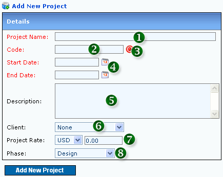

1. Add New Project

Figure 1: Add New Project
- 1. PROJECT NAME (MANDATORY)
- 2. PROJECT CODE (MANDATORY)
- 3. CLICK TO AUTOMATE PROJECT CODE GENERATION
- 4. START DATE AND END DATE (MANDATORY)
- 5. PROJECT DESCRIPTION
- 6. PROJECT CLIENT
- 7. PROJECT RATE: Rate per hour charged in timesheet
- 8. CURRENT PROJECT PHASE: Phase value editable by Admin
|